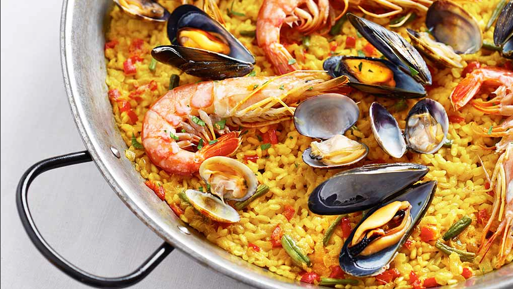
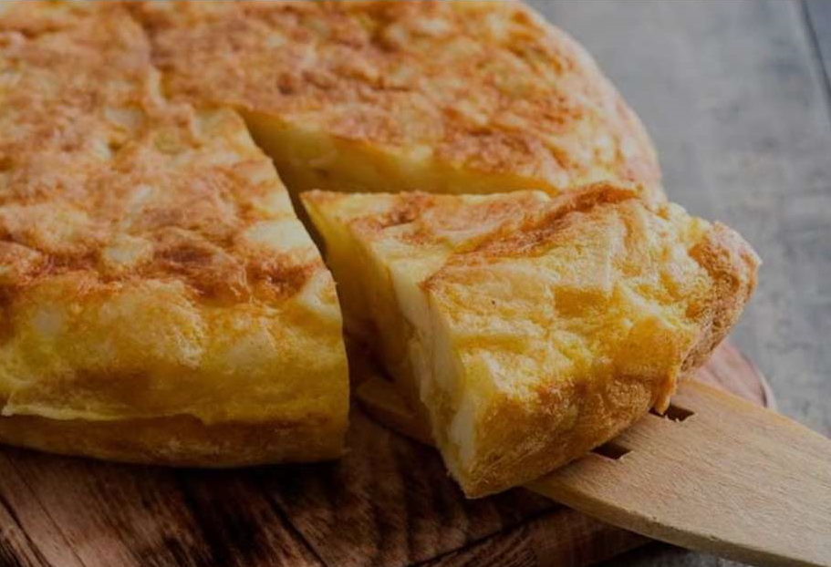
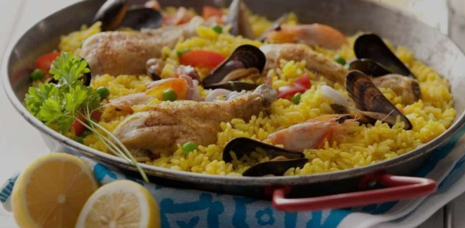
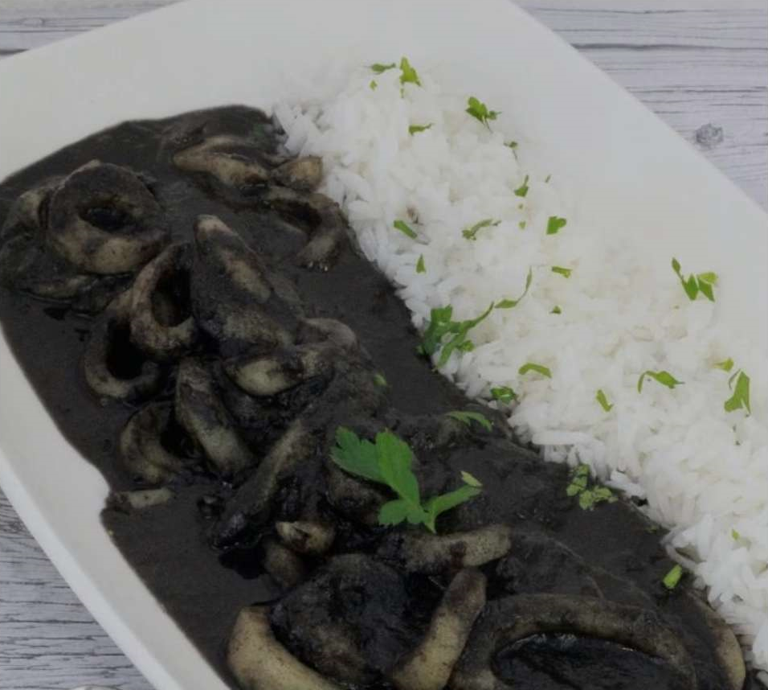

- Viajes Gastronomicos por el Mundo
Viajar es un verdadero festín para los sentidos. Cada aventura es una oportunidad única para descubrir la diversidad culinaria de nuestro planeta.
Desde saborear los exquisitos platos locales en puestos callejeros hasta deleitarse con las creaciones de chefs renombrados en restaurantes de renombre,
cada bocado nos transporta a una nueva cultura y nos conecta con las historias y tradiciones que dan forma a la comida del mundo.
¡Acompáñame en un viaje culinario que promete explorar el mundo a través del paladar!

Datos Generales
La gastronomía española, en su rica y variada tradición culinaria, ha sido profundamente influenciada por diversas culturas a lo largo de los siglos.
Este mestizaje gastronómico ha contribuido en gran medida a forjar la diversidad y riqueza de los sabores y platos que caracterizan la comida española en la actualidad.
Tortilla de PatatasLa tortilla de patatas o tortilla a la española, es una especie de homelet para formar una especie de torta de papa grande. Solo necesitaras 6 huevos, 1 cebolla, aceite de oliva, perejil, 1 pimiento verde y por supuesto 3 papas picadas. De igual forma, picaras todos los ingredientes en cubos pequeños, introduce todo en un sartén con aceite, sazona y revuelve y deja dorar ambos lados por 15 minutos.

|
PaellaDe hecho, es uno de los platillos más representativos de España, y es conocidísimo y probado en varias partes del mundo. Su ingrediente principal es el arroz, pero te diré que no es preparado de la manera común que aquí conocemos, pues su ingrediente estrella es el azafrán. Además, de manera muy habitual va acompañado por mariscos, pollo, salchichas, carne, algunas legumbres y otros alimentos.

|
Calamares en su TintaEn la comida típica de España, podrás encontrar en su mayoría platillos que contengan mariscos, así que prepara tu paladar para estos sabores. Además, la receta es a base de que los calamares sazonados en un sartén junto con una mezcla de diversas verduras. Al agregar la tinta del calamar, es lo que le da este color tan peculiar. Tambien suele servirse con arroz blanco, papas fritas y la salsa de la tinta en ocasiones lleva chile.

|